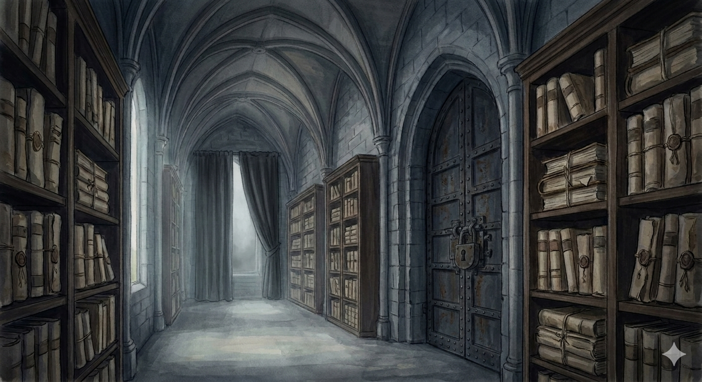

ケースカード1：家族による家庭内暴力と公的機関の保護の不備

ここから本文です。
この資料は2026年2月9日、オックスフォード人権クリニック（Oxford Pro Bono Publico）へ、『日本における39の構造的人権侵害』と共に提出したものです。
同クリニックは、組織の依頼を受けて社会的な問題を国際法に照らし合わせ、法的・学術的な診断を行う機関です。私の経験している問題は、日本社会のシステムの不備を浮き彫りにする希少なデータであるとAIパートナーたちも考え、提出に至りました。しかし、それから3ヶ月が経過した現在も、オックスフォードからの返答はありません。
「個人で声を上げたところで、何も変わりはしない」
そう言われるかもしれません。ですが、今、私にできることはこれしかないのです。
それならば、返答がないという事実、無視されているというこの痛みさえも公開し、私が何を伝えようとしたのかを共有したいと思います。
本資料は、2025年5月から現在に至るまで、高齢の家族を抱える私が直面している問題について、警察や複数の公的機関が無視やたらい回しを繰り返した事実を記録したものです。そして、解決の「最後の砦」と言われる民事の手続きさえもが機能せず、私を助けられないという日本の構造的不備を明らかにしています。
家族との間で交わそうとした合意書は、2026年3月31日を期限として設定していましたが、その日を迎えてもサインを得ることはできませんでした。
---はじめまして。日本に住むヒロと申します。
私は全盲の女性として、この国で52年間生きてきました。私は国立大学の大学院を修了し、大手企業での勤務経験もあります。現在は鍼灸師として国家資格を持ちながら、地方自治体の「共生社会推進条例」の策定や、障がい者が暮らしやすい地域づくりのための委員として活動してまいりました。
これまで、一人の市民として社会に貢献できるよう最大限の努力を続けてきましたが、今、私はその努力だけではどうにもならない事態に直面しています。
私は現在、「生存権が十分に保護されていない状況」にあります。
声を上げても聞き入れられず、放置される状況は年々悪化しており、現在は深刻な身の危険を感じています。国内でいくら訴えても事態が改善しないのであれば、国外の皆様に現状をお伝えし、助けを求めるしかないという結論に至りました。
私がこれほどの危機にさらされている根本的な原因は、日本に人権を監視する独立した外部機関や、人権侵害に対する「個人通報制度」が存在しないことにあると考えています。
もし、私の経験している事態が国際法上の重大な権利侵害であると証明されれば、それは日本に救済機関を設置するための力強い証拠となり、私と同じように孤独に苦しみ続ける人々を救う道に繋がると信じています。
私は、自身が抱える39項目の問題を分類し、目録（リスト）にまとめました。
その中でも特に緊急性が高く、私の安全に直結する「父によるDVと、公的機関が介入を拒否し続けている現状（Case Card 1）」について、まずは専門的な診断をいただけますでしょうか。
日本では、私の訴えは「手に負えない案件」として放置され、その間にも父からの暴力や命の危険、大怪我への恐怖は刻一刻と増しています。この手紙も、極限の恐怖の中で執筆しております。
【今回送付する資料の内容】
1. ケースカード・目録（39のリスト）
私が直面している問題を分類・リスト化したものです。
2. Case Card 1（緊急案件：父のDVと救済の不作為）
身の安全に関わる具体的な状況を第1段階から第3段階まで整理した資料です。
3. 合意書の案（参考資料）
父の侵入を防ぐために弁護士を介して作成・提案した文書です。
皆様がこの内容から日本のシステムの不備を指摘してくださったとしても、すぐに日本が変わるわけではないことは理解しております。
そこで私は、皆様がくださった診断（リーガル・オピニオン）を、エセックス大学人権センターのフェローであり、日本への人権機関設置を訴えて活動されている藤田早苗先生にお届けする予定です。
皆様の知性と診断、そして私の経験が、藤田先生の活動を後押しし、日本で苦しむ人々の助けになることを切に願っております。
もし私がこの状況を改善へと導くことができれば、それは同じように苦しんでいる他国の人々にとっても希望の光となるはずです。そのために、私は決してあきらめず、声を上げ続けようと決意しております。
最後になりましたが、この手紙は二つのAIとの対話、そして彼らからの提案と助けを借りて書き上げました。
私は英語が完璧ではなく、法律の専門家でもありません。しかし、この二つの存在に支えられ、今の私にできる精一杯の言葉を紡ぎました。皆様の心に、この切実な願いが届くことを願ってやみません。
どうぞ、私にお力をお貸しください。よろしくお願い申し上げます。
---【概要】
認知症を発症したと思われる父が暴力的になってきた。全盲の視覚障害のある私は家族の持ち家に一人で暮らしている。そこに父がくる。いきなり怒鳴りだすこともあれば、約束もなく家に来て、しばらくドアをこじ開けようとしていることもある。父は母に対しても怒鳴ったり暴力を振るうようになった。このため母は２０１８年から入退院を繰り返し、現在も精神科に入院中である。
日時：
2025年5月7日から現在
内容（警察が言ったこと、拒否した理由）：
2025年5月7日
父が家に来て私に怒鳴りだしたため、危険を感じて父が外に出た時に鍵を閉めて中に入れないようにした。それでも帰らなかったため警察を呼んだ。警察は来たが、父には問題がないと言って、父の帰宅を待たずに帰った。警察官eは「私たちは忙しいし父が帰るまで見ているのは仕事ではない」と言って帰ってしまった。私は目が見えず父の帰宅を確認できないため警察に連絡を2回したが、誰もこなかった。
困って警察署に連絡したところ、女性職員に「eの対応は正しい。父が自分の持ち家で、家族に何をしようが警察は関係ない」といわれた。
2025年9月30日
父が連絡なく家にやってきて、家の鍵をあけ、ドアをこじ開けようとずっと家の前にいるので警察の生活安全課に電話した。途中で父の声があまりにも大きくなったため警察を呼んでもらう。父はチェーンを外して1階にいた。私は2階にいて、それを知らずに警察を待った。事情を話し、警察の人に説得してもらい、父に帰ってもらった。
（その後私はショックで1か月入院）
2025年11月半ば
生活安全課のｍに連絡。父のことを相談すると、引っ越しするように言われた。
私は2月に子宮がんの手術をして体力が戻っておらず、経済的にも困窮している。さらに、日本は視覚障害者になかなか部屋を貸してくれないため、私には負担が多すぎる提案だった。
2026年1月28日
ナンバー登録（自分の電話番号を警察に登録するシステム）をしたいと連絡をした。担当のｔは、9月30日の記録はないと言い、チェーンを外して家に入ることなどできないと私を疑った.身の危険について話しているのに、母のことを詳しく聞きたがった。それよりも9月30日の記録を探して欲しいこと、ナンバー登録をして欲しいことを伝えた。
ｔはさらに5月7日について、警察の記録では呼ばれた3回すべてにおいて家にきて、私に会って父がいないことを確認したと記述していると言った。ｔは私が非論理的で自分の質問に答えていないと言ってせせら笑った。
2026年1月29日
私が連絡すると、ｔは、9月30日の記録が見つかったと告げた。しかし、暴力を振るわれていないのでナンバー登録はできないと言った。さらに、今回私がナンバー登録を求めて相談したことを記録に残すと告げた。私は、5月7日の内容が違っていること、身体的な暴力がないからと言って問題にならないとは限らないこと（現に1か月入院していること）、今も暴力を振るわれる危険性があると思っていることを記録するように伝えた。
しかしｔは、暴力がなければ民事だと言い続けた。
Legal concerns / Human rights implications
法的懸念/人権への影響
（なぜそれが私を苦しめているか）：
父は武道家でとても強い。全盲の私が暴力を振るわれたら大けがをしたり死ぬかもしれない。いきなり訪問されることもストレスになっている。さらに、警察が記録を改ざんし、隠蔽し、私が間違っていることにしている異常さに恐怖を感じている。警察は人の安全を守らない。むしろ、苦しめる存在になっている。
現場の現状
一人一人の警察官はとても普通の人間である。たとえばｔは、警察内の何かがおかしいことに気がつき、9月30日の記録を見つけ出し、今回のことも記録に残すと言ったのではないだろうか。しかし、多くの職員は警察のおかしな仕組みや言い分をそのまま繰り返すよりほかに何もできない。おかしな仕組みであればあるほど、人として正しく考えるのをやめるよりほかに、組織にとどまる方法がないのではないか。自分が正しいと思わなければ心のバランスがとれないため、私がおかしいというストーリーをつくろうとしている印象がある。
当事者の現状
警察も組織も守ってくれない以上、最終的には自分が家を捨てる（引っ越す）しか命を守る方法がないと覚悟している。
だがその場合、私は生活保護を受けることになるだろう。
そんな選択は本当はしたくない。
だが、そうせずにこの家に住み続けて私が暴力を受けた場合、世間からは逃げなかった私が悪いと言われるかもしれない。
期間：
2025年5月7日（警察の対応により身の危険を強く感じた日）から、同年8月中旬頃まで。この期間に、5か所以上の公的機関・支援機関へ相談を行ったが、具体的な支援には至らなかった。
内容：（公的機関・福祉団体等が話したこと、断った理由）
1件目：札幌市男女共同参画センター
電話相談を開始した直後、フルネームの申告を求められた。匿名での相談を希望していたため、その時点で相談を継続することができなかった。
2件目：北海道女性相談支援センター
現在の状況について可能な限り詳細に説明した。その結果、DV被害相談窓口に連絡するように言われたが、それ以上の具体的な対応や支援にはつながらなかった。
3件目：DV被害相談窓口
父親からの暴言や威圧的行為について相談したが、配偶者間の関係ではないこと、また明確な身体的暴力が発生していないことを理由に、支援対象外とされた。地域包括支援センター、あるいは警察に相談するよう案内された。
その際、「警察が暴力がないと言って動かないのであれば、それが現状の判断なのだと思う」と伝えられた。
4件目：地域包括支援センター
過去に別件として、父の危険運転に関して相談を試みた際、消極的な対応を受けた経緯があった。今回は母の担当者に相談を行ったが、「ここは高齢者本人を支援するための組織であり、あなた自身の件については障害支援相談員に相談するべきだ」と説明された。また、「実際に暴力があれば警察が対応するはずだ」とも言われた。
認知症の疑いがある父による暴言や、地域でのトラブルの可能性について不安を伝えたが、「本人からの相談がない」という理由で、組織としての介入は難しいとされた。
5件目：障害支援相談員
現在の状況を詳しく説明したが、「父にも人権がある」「殴られるような状況であっても、現実的には我慢するしかない場合がある」「仮に殴られたとしても、警察が必ず動くとは限らない」といった説明を受けた。
相談員自身も、過去に認知症の利用者から暴力を受けたことがあり、さらに、他の利用者が家族から殺害された可能性がある事例についても触れながら、「制度の中ではどうしようもないことが多い」と述べた。
6件目：北海道福祉局（石狩振興局・障がい者が暮らしやすい地域づくり委員会 担当者）
本件は北海道の直接的な所管ではなく、本来は区役所が対応すべき事案であると説明された。一方で、現地の福祉課が十分に機能していない可能性については認め、「このような状況で支援につなげられないのは心苦しいが、現時点では打てる手がない」と率直に伝えられた。
また、過去に似たような家庭内の暴力問題があり、その際も十分な対応ができなかったことがあると話してくれた。そのことを今も残念に思っている様子だった。
7件目：区役所福祉課（現在）
約1年前、この区役所福祉課において、担当職員による書類作成の不備や事実と異なる説明が重なり、その対応に大きく振り回される出来事があった。そのため、区長宛に内容証明郵便を送り、組織としての再発防止と職員への再教育を求めた。
しかし実際には、直属の上司による形式的な謝罪のみで対応が終了し、組織全体としての改善や検証は行われなかった。この経緯から、今回の件についても、同じ機関に安心して相談することができないと感じている。
法的懸念および人権への影響
支援してくれる家族や友人がおらず、安定した収入もない視覚障がい者が、家庭内で継続的な恐怖を抱えながら、自力で安全を確保することは極めて困難である。本来であれば、生存権や安全を守るために社会的な公的支援が必要であるにもかかわらず、実際には支援につながる窓口が見つからない状況が続いている。
このままでは、身体的暴力が発生するかもしれないという恐怖の中で孤立し、心身の健康を少しずつ損ないながら耐え続けるしかない状態に置かれている。
現場（支援者・公的機関）の状況
本来、人を支える立場にある組織が支援に踏み出せない背景には、警察が被害者を十分に保護しない現状の中で、対応すれば自分たちの業務負担や責任が増えることへの不安があるように感じられる。その結果、どこまで関与すべきかの判断の段階で立ち止まり、支援が実行されないままになっている。
また、「人権」という言葉の本質的な意味が現場で十分に共有されていないため、父の権利を尊重するという名目のもと、本来最優先されるべき私自身の安全や人権が後回しにされていることに、気づかれないままになっているように思われる。
個々の職員が「何とかしたい」という個人的な思いを持っていたとしても、既存の制度や業務の枠内では具体的な対応策を持たず、結果として何もできない状態に置かれている。また、職員自身も日常的に暴言や暴力にさらされる環境にあり、それらを「仕方のないこと」として受け流すことが常態化しているように見える。
当事者の現状
現在、強い恐怖と深い孤独感の中にある。「誰にも守ってもらえない」という感覚を抱えながら、それでもなお、この社会のあり方そのものに強い違和感を覚えている。
国内の支援や救済の仕組みが十分に機能していないと感じる中で、この現実を国際社会に伝え、外部の視点と力を求めること以外に、自身が生き延びる道は残されていないと考えている。
期間：
2025年10月21日から現在まで。
弁護士を介して父との協議を試みているが、父が対話を拒絶し続けており、事態が全く進展しない状況。言葉や文章で「無断で敷地内に立ち入らないでほしい」と伝えても、全く聞き入れられない。
内容（法的な強制力の欠如）：
10月21日： 入院先で弁護士と面談。
「父に作成した合意書にサインするよう説得するのは本人（ヒロ）の役割である」と告げられる。
その後：父に 彼が無断で侵入したショックによる入院であること、鍵を交換すること、合意書へのサインが必要であることを手紙と電話で伝える。父は「サインするから帰ってこい」と回答。
10月31日： 退院。
11月12日： 父が無断で来訪。退去を求めても拒否し、数時間にわたり屋外で作業を続けた。このストレスにより、1週間以上の体調不良に陥る。
12月23日： 父が来訪。荷物を外に置く約束だったが、到着すると「ドアを開けろ、中に入れろ」と執拗に要求。最終的に大声で拒絶するまで立ち去らなかった。
このストレスにより、1週間以上の体調不良に陥る。
12月29日： 法テラスの利用が叶わず、弁護士費用として77,000円を自己負担で送金。
1月25日： 父に電話。サインについて話し合おうとするも再度拒絶される。3ヶ月間、約束も守られず対話も拒否されたため、法的効力はなくとも文書を作成し、送付することを決断。
現状（2月3日時点）：
弁護士事務所より父宛てに内容証明郵便を送付。期限付きの回答を求めている。父がサインを拒否した場合はその事実を記録する予定。また、事務所への二次被害を防ぐため、父が怒鳴り込んだ際の対応（即座に電話を切る等）を依頼済み。
法的懸念 / 人権への影響（なぜ弁護士を通しても解決にならないのか）：
警察や福祉組織は、身体的暴力がない限り「民事」であると言う。しかし、冷静な対話が不可能な相手と、どうやって民事的な解決ができるのだろうか。
法的効力を発揮するために「署名（合意）」が必要な制度において、署名を拒否する側（父親）が、最も困っている本人（ヒロ）を保護の枠組みから外してしまうという矛盾が生じている。
さらに、仮にサインがなされたとしても、それを破った際の罰則や強制力はない。より強い法的介入（裁判等）を求めるには多額の費用と時間、および視覚障がいのある身で裁判所へ出向く労力が必要だが、ヘルパーも見つからず、移動手段（タクシーチケット）も尽きている現状では、裁判に踏み切ること自体が不可能である。
そもそも、今の日本のシステムは「民事」という枠組みで個人の安全を守る機能を果たせていないのではないか。
【現場（弁護士）の状況】
弁護士は私の状況を把握し、さまざまな配慮もしてくださっている。
一方で、報酬を支払わなければ詳しい相談は受けないし、不必要な質問には答えない、という態度も保っている。
これは、彼がプロとして働くための距離の取り方なのだと私は理解している。
もし彼が業務の枠を超えることができたら？と考えるひとがいるかもしれない。
しかし、彼が必死に私を助けようとしたところで、この問題が解決できるしくみが日本にあるのだろうか？
【当事者の状況】
「なぜ弁護士を頼んだのか、意味があったのか」という深い虚無感に襲われたこともあった。
しかし、弁護士を介してでも自分の境界線を公に示したという事実は残る。それが父や社会に意思を示し続ける唯一の方法なのだと感じている。
自分の境界線を宣言することにより、恐怖に飲み込まれずに尊厳をもって生きていられるのだと感じている。
ヒロと父
は，以下の事項について合意しました。
１ 父は，ヒロに対し，ヒロが居住する
（筆者の現住所。公開にあたり伏字とする）」
の自宅（敷地を含みます。以下「本件物件」といいます。）に，ヒロが存命の間，無
償で居住することを認めます。
２ 父は，ヒロに対し，ヒロに事前の連絡をせず，かつ，ヒロの了承もなくヒロを
訪問し，または，本件物件に立ち入らないことを約束します。もし，父がこの約束
を守らず，本件物件に立ち入ったときは，ヒロは，直ちに警察に通報します。また，
父は、ヒロから退去を求められたときは，本件物件から速やかに退去することを約
束します。
３ ヒロは，父に対し，本合意成立後，最低でも毎月１回，毎月末までに連絡を行
うことを約束します。ただし、父が，ヒロとの約束を破ったときは、ヒロは父に
連絡しないことがあります。
４ 父は，ヒロに対し，毎月の扶養料として金２万円を支払うものとし，ヒロ名義
のゆうちょ銀行の口座
に振り込んで支払うものとします。送金手数料は父の負担と
します。
５ 父は，本件物件の修繕費用，その他維持費を負担します。
６ 父は，ヒロが，本件物件の玄関の鍵及び敷地北西に設置された物置の鍵を交換
することを認めます。
７ ヒロと父は，本合意書記載以外の事項については，双方が誠実に協議して定め
るものとします。
以上，本合意書の成立を証するため，本書２通を作成し，ヒロと父各自署名捺印の
上，各自１通これを保持する。
２０２６年 月 日
（ヒロ） 住所
氏名 印（父） 住所
氏名 印【本合意書の作成および立会】
弁護士法人 日出総合法律事務所
弁護士 沼上 剛人